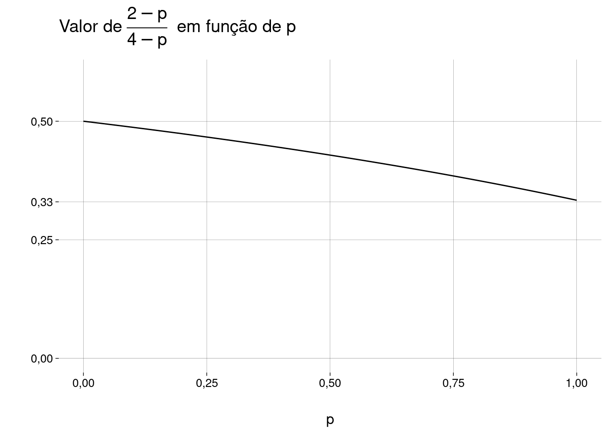

04: Probabilidade condicional
Exercícios do livro (cap. 2)
2
Uma mulher está grávida de meninos gêmeos.
Gêmeos podem ser idênticos ou fraternos.
\(1/3\) dos gêmeos são idênticos.
Gêmeos idênticos têm \(50\%\) de chance de serem ambos meninos, e \(50\%\) de chance de serem ambos meninas.
Para gêmeos fraternos, cada gêmeo tem, independentemente, \(50\%\) de chance de ser menino, e \(50\%\) de chance de ser menina.
Qual a probabilidade de a mulher estar grávida de gêmeos idênticos?
-
Eventos:
\[ \begin{aligned} I &= \text{os gêmeos são idênticos} \\ M &= \text{os gêmeos são dois meninos} \end{aligned} \]
-
Probabilidades dadas:
\[ \begin{aligned} P(I) &= 1/3 \\ P(M \mid I) &= 1/2 \\ P(M \mid \neg I) &= 1/4 \end{aligned} \]
-
Queremos calcular \(P(I \mid M)\). Usamos Bayes:
\[ \begin{aligned} P(I \mid M) &= \frac{P(M \mid I) \cdot P(I)}{P(M)} \end{aligned} \]
-
Só falta o valor de \(P(M)\), que calculamos usando probabilidade total:
\[ \begin{aligned} P(M) &= P(M \mid I)P(I) + P(M \mid \neg I)P(\neg I) \\ &= 1/2 \cdot 1/3 + 1/4 \cdot 2/3 \\ &= 1/3 \end{aligned} \]
-
Concluímos
\[ \begin{aligned} P(I \mid M) &= \frac{P(M \mid I) \cdot P(I)}{P(M)} \\ &= \frac{1/2 \cdot 1/3}{1/3} \\ &= 1/2 \end{aligned} \]
4
Um aluno está resolvendo uma questão de múltipla escolha com \(n\) opções.
\(K\) é o evento que corresponde a ele saber a resposta correta.
\(R\) é o evento que corresponde a ele acertar (sabendo ou chutando).
Se ele sabe a resposta, ele acerta.
Se ele não sabe, ele chuta uma opção ao acaso.
Considere \(P(K) = p\).
Ache \(P(K \mid R)\).
Mostre que \(P(K \mid R) \geq p\). Por que isto faz sentido? Quando a igualdade é exata?
-
Vamos usar Bayes, supondo \(p = P(K) > 0\):
\[ \begin{aligned} P(K \mid R) &= \frac{P(R \mid K) \cdot P(K)}{P(R)} \\ &= \frac{1 \cdot p}{ P(R \mid K) \cdot P(K) + P(R \mid \neg K) \cdot P(\neg K) } \\ &= \frac{p}{ 1 \cdot p + \frac{1}{n} \cdot (1 - p) } \\ &= \frac{np}{np + (1 - p)} \end{aligned} \]
-
Isto equivale a mostrar
\[ \frac{np}{np + (1 - p)} \geq p \]
Como todos os valores são positivos, isto equivale a
\[ np \geq np^2 + (1 - p)p \]
Dividindo ambos os lados por \(p > 0\):
\[ n \geq np + 1 - p \]
Daí,
\[ \begin{aligned} n \geq np + 1 - p &\iff n - np \geq 1 - p \\ &\iff n(1 - p) \geq 1 - p \\ &\iff n \geq 1 & \text{(supondo } p < 1 \text{)} \end{aligned} \] O que é verdade, pois existe pelo menos uma opção (a correta).
Se \(p = 1\), a igualdade vale, e \(P(K \mid R) = 1\), pois o aluno sempre sabe a resposta e sempre acerta.
Se \(n = 1\), a igualdade vale, e \(P(K \mid R) = p\), pois o aluno acertar (ele sempre acerta!) e o aluno saber são independentes.
Imagine \(n > 1\).
Lembre-se de que \(P(K \mid R) = \frac{P(K \cap R)}{P(R)}\).
O numerador é a probabilidade do evento “o aluno sabe e o aluno acerta”. Esta probabilidade é exatamente \(p\), pois “o aluno sabe” é sub-evento de “o aluno acerta”.
O numerador \(P(R)\) é um número tal que \(0 < P(R) < 1\). Vamos chamar este número de \(1/x\), para \(x > 1\).
Então,
\[ P(K \mid R) = \frac{P(K \cap R)}{P(R)} = \frac{p}{1/x} = xp > p \]
Em R
Valores teóricos:
n <- 1:9
p <- seq(0, 1, .25)
df <- expand.grid(n = n, p = p) %>%
mutate(
pkr_teorico = n * p / (p * (n - 1) + 1)
) %>%
arrange(n)
dfGráfico:
Conclusão óbvia: quanto maior o número \(n\) de opções, maior a probabilidade \(P(K \mid R)\) de o aluno ter acertado sabendo, em oposição a ter acertado chutando:
\[ \begin{aligned} \lim_{n \to \infty} P(K \mid R) &= \lim_{n \to \infty} \frac{np}{np + 1 - p} \\ &= \lim_{n \to \infty} \frac{p}{p} \\ &= 1 \end{aligned} \]
Simulação:
sim <- function(n, p, reps = 1e7) {
sabe <- sample(
c(TRUE, FALSE),
reps,
replace = TRUE,
c(p, 1 - p)
)
acerta <- sabe
nao_sabe <- sum(!sabe)
acerta[which(!sabe)] <-
sample(
c(TRUE, FALSE),
nao_sabe,
replace = TRUE,
prob = c(1/n, 1 - 1/n)
)
sum(sabe) / sum(acerta)
}
sim <- Vectorize(sim)
df <- df %>%
mutate(
pkr_simulado = sim(n, p)
)
df
12
-
Alice está tentando enviar uma mensagem codificada em binário para Bob.
Ela envia um bit: \(0\) ou \(1\) com probabilidades iguais.
Se ela envia \(0\), há probabilidade \(5\%\) de erro.
Se ela envia \(1\), há probabilidade \(10\%\) de erro.
Dado que Bob recebeu \(1\), qual a probabilidade de Alice ter enviado \(1\)?
-
Eventos e probabilidades:

-
Queremos achar \(P(A \mid B)\). Usando Bayes:

p0 <- .05 p1 <- .1 q0 <- 1 - p0 q1 <- 1 - p1 pA <- 1/2 pBIA <- q1 pB <- (q1 + p0) / 2 pAIB <- pBIA * pA / pB pAIB ## [1] 0,9473684 -
Para sermos completos, vamos calcular outras probabilidades, com \(P(A) = P(\neg A) = 1/2\):


-
Simulação:
reps <- 1e7 alice_envia <- sample(c(0, 1), reps, replace = TRUE) bob_recebe <- alice_envia bob_recebe[which(alice_envia == 0)] <- sample( c(0, 1), length(which(alice_envia == 0)), replace = TRUE, prob = c(95/100, 5/100) ) bob_recebe[which(alice_envia == 1)] <- sample( c(0, 1), length(which(alice_envia == 1)), replace = TRUE, # Atenção: aqui, erro é 1 virar 0: prob = c(10/100, 90/100) ) pab <- sum(alice_envia & bob_recebe) / sum(bob_recebe) pab ## [1] 0,9474936
-
Agora, eles usam um código com repetição:
Alice envia \(000\) para representar \(0\) e \(111\) para representar \(1\).
Bob decodifica a mensagem tomando o bit que está em maioria.
As probabilidades de erro são como antes, e os erros em bits diferentes são independentes.
Dado que Bob recebe \(110\), qual a probabilidade de que Alice tenha enviado \(111\)?
-
Eventos:
\[ \begin{aligned} AAA &= \text{Alice envia } 111 \\ BB\neg B &= \text{Bob recebe } 110 \end{aligned} \]
\(P(AAA) = 1/2\), pois Alice envia somente \(111\) ou \(000\).
-
Usando Bayes:
\[ P(AAA \mid BB\neg B) = \frac{P(BB\neg B \mid AAA) \cdot P(AAA)}{P(BB\neg B)} \]
\(P(BB\neg B \mid AAA) = q_1 \cdot q_1 \cdot p_1\), pois erros em bits diferentes são independentes.
-
Pela lei da probabilidade total:
\[ \begin{aligned} P(BB\neg B) &= P(BB\neg B \mid AAA) \cdot P(AAA) + P(BB\neg B \mid \neg(AAA))P(\neg(AAA)) \\ &= \frac12 \cdot \left( q_1 \cdot q_1 \cdot p_1 + p_0 \cdot p_0 \cdot q-0 \right) \end{aligned} \]
-
Daí,
\[ \begin{aligned} P(AAA \mid BB\neg B) &= \frac{P(BB\neg B \mid AAA) \cdot P(AAA)}{P(BB\neg B)} \\ &= \frac{ q_1 \cdot q_1 \cdot p_1 \cdot 1/2 }{ \left( q_1 \cdot q_1 \cdot p_1 + p_0 \cdot p_0 \cdot q_0 \right)\cdot 1/2 } \\ &= \frac{ q_1 \cdot q_1 \cdot p_1 }{ \left( q_1 \cdot q_1 \cdot p_1 + p_0 \cdot p_0 \cdot q_0 \right) } \end{aligned} \]
-
Numericamente:
q1 * q1 * p1 / (q1 * q1 * p1 + p0 * p0 * q0) ## [1] 0,9715142
14
Se \(P(A), P(B) \in (0, 1)\), então
\[ P(A \mid B) > P(A \mid \neg B) \iff P(B \mid A) > P(B \mid \neg A) \]
???
15
\(A\) e \(B\) são eventos com
\[ 0 < P(A \cap B) < P(A) < P(B) < P(A \cup B) < 1 \]
Você está torcendo para que \(A\) e \(B\) ambos ocorram.
O que você ficaria mais feliz em observar?
Que \(A\) ocorreu?
Que \(B\) ocorreu?
Que \(A \cup B\) ocorreu?
-
Queremos observar o evento \(E\) tal que \(P(A \cap B \mid E)\) seja máximo.
\[ \begin{aligned} P(A \cap B \mid A) &= \frac{P(A \cap B)}{P(A)} \\ P(A \cap B \mid B) &= \frac{P(A \cap B)}{P(B)} \\ P(A \cap B \mid A \cup B) &= \frac{P((A \cap B) \cap (A \cup B))}{P(A \cup B)} \\ &= \frac{P(A \cap B)}{P(A \cup B)} \end{aligned} \]
Como \(P(A)\) é o menor denominador, observar \(A\) maximiza \(P(A \cap B \mid E)\).
Intuitivamente, como \(A\) é o evento menos provável dos dois, saber que \(A\) ocorreu nos deixa mais próximo da ocorrência dos dois eventos do que saber que \(B\) (ou que algum dos dois) ocorreu.
16
\[ P(A \mid B) \leq P(A) \implies P(A \mid \neg B) \geq P(A) \]
Se a ocorrência de \(B\) torna \(A\) menos provável, então a não-ocorrência de \(B\) torna \(A\) mais provável.
-
Pela lei da probabilidade total:
\[ \begin{aligned} P(A) &= P(A \mid B)P(B) + P(A \mid \neg B)P(\neg B) \\ \therefore P(A \mid \neg B) &= \frac{P(A) - P(A \mid B)P(B)}{P(\neg B)} \end{aligned} \]
-
Daí,
\[ \begin{aligned} P(A \mid \neg B) &\geq \frac{P(A) - P(A)P(B)}{P(\neg B)} & \text{pois } P(A \mid B) \leq P(A) \\ &= \frac{P(A)(1 - P(B))}{P(\neg B)} \\ &= P(A) \end{aligned} \]
17
Em lógica determinística, \(A \to B \iff \neg B \to \neg A\).
Em probabilidades?
Considere eventos \(A\) e \(B\) com \(P(A), P(B) \not\in \{0, 1\}\).
- Mostre que \(P(B \mid A) = 1 \implies P(\neg A \mid \neg B) = 1\).
-
\(A\) está contido em \(B\):
\[ P(B \mid A) = 1 \iff \frac{P(A \cap B)}{P(A)} = 1 \iff P(A \cap B) = P(A) \]
-
Vamos mostrar que \(P(\neg A \mid \neg B) = 1\):
\[ \begin{aligned} P(\neg A \mid \neg B) &= \frac{P(\neg A \cap \neg B)}{P(\neg B)} \\ &= \frac{P(\neg (A \cup B))}{P(\neg B)} \\ &= \frac{1 - P(A \cup B)}{P(\neg B)} \\ &= \frac{1 - \left[ P(A) + P(B) - P(A \cap B) \right]}{P(\neg B)} \\ &= \frac{1 - P(B)}{P(\neg B)} \\ &= \frac{P(\neg B)}{P(\neg B)} \\ &= 1 \end{aligned} \]
- Mostre que, se “\(=\)” for substituído por “\(\approx\)”, o resultado não vale. Ache um exemplo em que \(P(B \mid A)\) seja quase \(1\), mas \(P(\neg A \mid \neg B)\) seja quase \(0\).
-
Valores de exemplo, com \(A\) e \(B\) independentes:
\[ \begin{aligned} P(A) &= 80/100 \\ P(B) &= 90/100 \\ P(\neg A) &= 20/100 \\ P(\neg B) &= 10/100 \\ P(A \cap B) &= P(A) \cdot P(B) = 72/100 \\ P(A \cup B) &= P(A) + P(B) - P(A \cap B) = 98/100\\ P(B \mid A) &= \frac{P(A \cap B)}{P(A)} = 72/80 \approx 1 \\ P(\neg A \mid \neg B) &= \frac{P(\neg A \cap \neg B)}{P(\neg B)} = \frac{1 - P(A \cup B)}{P(\neg B)} = 2/10 \approx 0 \end{aligned} \]
Vamos criar uma medida de independência. Se \(P(A) \neq 0\) e \(P(B) \neq 0\), definimos
\[ I = \frac{P(A \cap B)}{P(A)P(B)} \]
Com isso,
\(A\) e \(B\) são disjuntos \({} \iff I = 0\)
\(A\) e \(B\) são independentes \({} \iff I = 1\)
-
\(A\) e \(B\) se atrapalham \({} \iff 0 < I < 1\).
I.e., \(P(A) > P(A \mid B)\) e \(P(B) > P(B \mid A)\).
-
\(A\) e \(B\) se ajudam \({} \iff I > 1\).
I.e., \(P(A) < P(A \mid B)\) e \(P(B) < P(B \mid A)\).
22
Este problema foi proposto pela primeira vez por Lewis Carroll em 1893.
Uma bolsa contém uma bola, que é ou azul, ou verde, com probabilidades iguais.
Uma bola verde é colocada na bolsa; agora, há \(2\) bolas na bolsa.
Uma bola é retirada da bolsa ao acaso.
A bola retirada é verde.
Qual é a probabilidade de que a bola que sobrou na bolsa seja verde?
-
Antes de mais nada, vamos definir os eventos:
\[ \begin{aligned} O &= \text{bola original é verde} \\ R &= \text{bola retirada é verde} \\ S &= \text{bola que sobrou é verde} \end{aligned} \]
O importante é perceber que o enunciado diz que o evento \(R\) aconteceu, mas as probabilidades devem ser calculadas pensando em todos os resultados possíveis, antes de o experimento acontecer.
Ou seja, em vez de tomar \(P(R) = 1\) — o que seria errado — vamos calcular \(P(S \mid R)\): a probabilidade de que a bola que sobrou seja verde, sabendo que a bola retirada foi verde.
-
Começamos com a lei da probabilidade total, condicionando aos dois casos possíveis:
\[ \begin{aligned} P(S \mid R) &= \underbrace{P(S \mid R, O) \cdot P(O \mid R)}_{\text{caso 1: bola original verde}} \;+\; \underbrace{P(S \mid R, \neg O) \cdot P(\neg O \mid R)}_{\text{caso 2: bola original azul}} \end{aligned} \]
-
No caso \(1\):
\[ \begin{aligned} P(S \mid R, O) \cdot P(O \mid R) &= 1 \cdot P(O \mid R) \\ &= P(O \mid R) \end{aligned} \]
-
No caso \(2\):
\[ \begin{aligned} P(S \mid R, \neg O) \cdot P(\neg O \mid R) &= 0 \cdot P(\neg O \mid R) \\ &= 0 \end{aligned} \]
Isto faz sentido: se a bola original era azul, não há como a bola que sobrou ser verde.
-
Só precisamos calcular a probabilidade do caso \(1\), que é \(P(O \mid R)\). Vamos usar Bayes:
\[ \begin{aligned} P(O \mid R) &= \frac{P(R \mid O) \cdot P(O)}{P(R)} \\ &= \frac{1 \cdot 1/2}{P(R)} \end{aligned} \]
-
Para calcular \(P(R)\), lei da probabilidade total de novo, condicionando sobre a bola original:
\[ \begin{aligned} P(R) &= P(R \mid O) \cdot P(O) + P(R \mid \neg O) \cdot P(\neg O) \\ &= 1 \cdot 1/2 + 1/2 \cdot 1/2 \\ &= 3/4 \end{aligned} \]
-
Chegamos a
\[ \begin{aligned} P(O \mid R) &= \frac{P(R \mid O) \cdot P(O)}{P(R)} \\ &= \frac{1 \cdot 1/2}{P(R)} \\ &= \frac{1/2}{3/4} \\ &= \frac{2}{3} \end{aligned} \]
-
Outra maneira de calcular \(P(S \mid R)\) seria aplicar Bayes primeiro:
\[ P(S \mid R) = \frac{P(R \mid S) \cdot P(S)}{P(R)} \]
mas as probabilidades do numerador são mais difíceis de calcular! Teríamos que usar a lei da probabilidade total duas vezes para o numerador (além de uma vez para o denominador).
29
Uma família tem \(2\) crias.
Cada cria tem a mesma probabilidade de ser menino ou menina, e os sexos delas são independentes.
Cada cria tem a característica \(C\) com probabilidade \(p\), independentemente uma da outra e do sexo.
Mostre que a probabilidade de serem duas meninas, dado que pelo menos uma das crias é uma menina com a característica \(C\), é
\[ \frac{2 - p}{4 - p} \]
Observe:
Se \(p = 1\), então a probabilidade é \(1/3\), como no exemplo 2.2.5.
Se \(p \to 0\), então a probabilidade tende a \(1/2\) pela esquerda, como no exemplo 2.2.7.
-
Eventos:
\[ \begin{aligned} AA &= \text{As duas são meninas} \\ AC &= \text{Pelo menos uma é menina e tem } C \end{aligned} \]
-
Vamos usar Bayes:
\[ P(AA \mid AC) = \frac{P(AC \mid AA) \cdot P(AA)}{P(AC)} \]
-
A probabilidade de ambas serem meninas é
\[ P(AA) = 1/4 \]
-
A probabilidade \(P(AC)\) de pelo menos uma ser menina e ter \(C\) é a soma das probabilidades de
Ambas serem meninas, ambas terem \(C\): \(\frac14 \cdot p^2\).
Ambas serem meninas, só uma ter \(C\) (a primeira ou a segunda): \(2 \cdot \frac14 \cdot p \cdot (1 - p)\).
Uma ser menina com \(C\), a outra ser menino (com ou sem \(C\)): \(\frac12 \cdot p\).
Logo, \[ P(AC) = \frac{p \cdot (4 - p)}{4} \]
-
A probabilidade \(P(AC \mid AA)\) de uma ser menina com \(C\), dado que ambas são meninas, é
\[ \begin{aligned} P(AC \mid AA) &= 1 - (1 - p)^2 \\ &= p \cdot (2 - p) \end{aligned} \]
-
Juntando tudo:
\[ \begin{aligned} P(AA \mid AC) &= \frac{P(AC \mid AA) P(AA)}{P(AC)} \\ &= \frac {p \cdot (2 - p) \cdot 1/4} {p \cdot (4 - p) \cdot 1/4} \\ &= \frac{2 - p}{4 - p} \end{aligned} \]
-
Um gráfico:
